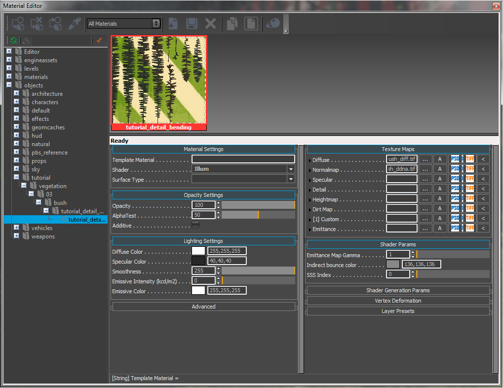
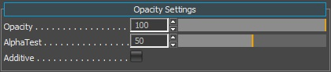
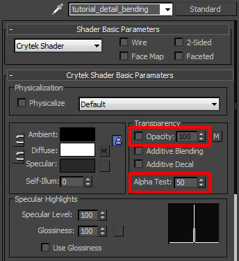
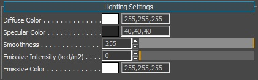
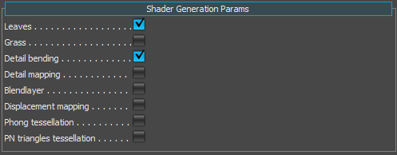
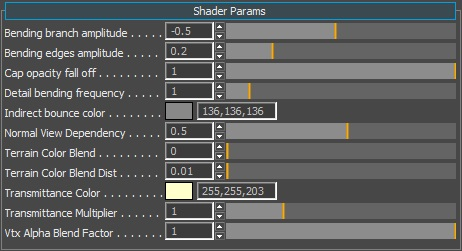
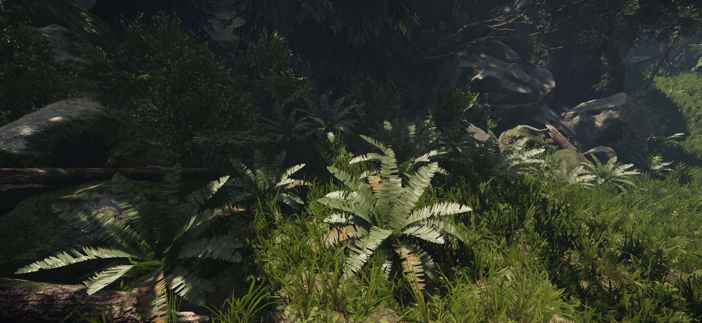

Material Setup in CRYENGINE
Now we have our asset configured correctly, let's move on to the CRYENGINE side of preparing the asset to be used for production. Have an existing level open or create an empty level as a testing area for this asset.
Material
First open the Material Editor and go to the tutorial_detail_bending material under:
<Your_Project>\Assets\Objects\tutorial\vegetation\03\bush\detail_bending\
If the export process is completed successfully for the material and geometry, you should have the material as shown. Note the correct folder structure and also the same material setup that we configured inside 3dsMax or Maya. A lot of the fields have been filled out already through the export process (note the Diffuse and Normal texture paths already filled in). But there are still a few options that we need to set ourselves.
The rest is completed here in the CRYENGINE Material Editor.

Pic1: Initial Material Editor overview
Material Settings
We only have to change two settings here the Shader and the Surface Type. The shader we want to use is the Vegetation shader and the surface type is also set to Vegetation. Select both from the drop down lists.

Pic2: Material settings
Opacity Settings
Here we are using the default values that we set up in the DCC tool. Opacity at 100% and the AlphaTest set to 50.

Pic3: Opacity

Pic4: Re-cap of where this info came from in 3dsMax
Lighting
Under the Lighting Settings, we can set the color parameters. To be correctly in line with the PBS pipeline, we have to:
- Set our Diffuse Color to pure white 255,255,255.
- Set the Specular Color within the 40 - 60 range (dark grey).
- Set the Smoothness slider to 255 max. Since we are controlling this value through the normalmaps alpha channel (ddna).

Pic5: Lighting Settings
Texture Maps
The Texture Maps section should already have been filled out with our Diffuse (*.diff) and our Normalmap (*.ddna).

Pic6: Texture maps with the diffuse and normal map assigned
Shader Generation Params
This tab in the Material Editor will show you different options depending on the shader type you assign to this material SubId. Since we have selected the vegetation shader, it exposes the options that only apply to the vegetation. To continue, activate Detail Bending in order to enable this system to work. Also check the box with the Leaves param. We want our asset to run through the higher quality pipeline.
Note that the Leaves parameter forces the material to be two-sided.

Pic7: Shader Generation Params with detail bending and leaves enabled
Shader Params
As you may have noticed, we jumped this section in favor of the Shader Generation Params first. We wanted to enable the Detail Bending and Leaves options first to expose all the parameters that we need to configure the asset correctly. Enabling those parameters has exposed some additional ones in the Shader Params section. It should now look like this (Pic8).

Pic8: Shader Params
Name | Description |
|---|---|
| Bending branch amplitude | Controls the macro movement amplitude (Blue channel). |
| Bending edges amplitude | Controls the micro movement amplitude (Red channel). |
| Cap opacity fall off | Controls how strongly vegetation polygons fade out when looking at them at a steep angle. This helps to disguise the plane shape of vegetation geometry. |
| Detail bending frequency | Controls micro and macro movement amplitude. |
| Indirect bounce color | Keep this at the default value. |
| Normal_View_Dependency | This value orients the normals towards the player and is useful for planes. |
| Terrain Color Blend | If you enable UseTerrainColor in the Vegetation tool for the object, this will absorb some of the color information of the underlying terrain where the vegetation object has been placed. This feature helps distant vegetation objects blend into the scene at distance. |
| Terrain Color Blend Dist | This slider controls how close to the camera the absorption of the terrain color will happen. |
| Transmittance Color | This color is what you would get if you were to shine a light through the leaf and look at it from the other side. |
| Transmittance Multiplier | Controls how strong the translucency (transmittance) effect will be. |
| Vtx Alpha Blend Factor | Used for faking AO. If you have applied some vertex paint to the base of grass geometry, you can control the strength of the blend effect with this slider. Technically, we do not need to use this because of technology such as SSDO, SSAO and SVOGI, but sometimes it can help the asset by using this. |
Vegetation Editor
Before we continue to configure the material params, it will help if we place some of these bush objects down using the vegetation tool to get instant visual feedback as we update the material. We will not go into an in-depth tutorial of the vegetation tool here.
For more information on Vegetation Editor, see HERE.
Create a vegetation group and add the bush
Go to the Tools menu option, and select the Vegetation Editor.

Pic9: Selecting the "Vegetation" Editor
Add a new Category and call it something appropriate (like "bush").

Pic10: Adding a Vegetation group
Click the Add Vegetation Object (first button) to add a vegetation object to this group.

Pic11: Adding a vegetation object to the group
In the browse dialog, go to your folder where you saved the asset and select the model (*.cgf):
<Your_Project>\Assets\Objects\tutorial\vegetation\03\bush\detail_bending\tutorial_detail_bending>
Now highlight the object you just added to the category to select it, and you can perform any one of the following operations:
- Enable the Paint Objects button to paint down lots of instances your bush asset, or
- To be more precise, do not select the Paint Objects button (so it's not active) and on the terrain press Shift+LMB to place only 1 instance.
As you may have noticed there is no bending happening on this asset yet. Vegetation objects have a bending value exposed to them which allows for a basic deformation on the whole asset. This needs to be activated in order for Detail Bending to also work.

Pic12: Activated Bending
Final tweaking
Your fern bush should now have a proper bending effect on its leaves. You are now able to change Detail Bending values in your material to achieve proper results.

Pic13: Level Woodland, with Detail Bending bushes added at the start